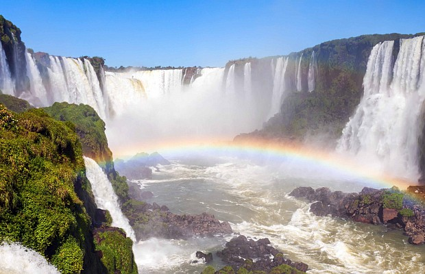

Experiencia única en las majestuosas Cataratas del Iguazú, una de las Siete Maravillas Naturales del Mundo. Este tesoro natural, ubicado en la frontera entre Argentina y Brasil, te cautivará con su belleza imponente y te invitará a vivir aventuras inolvidables.
